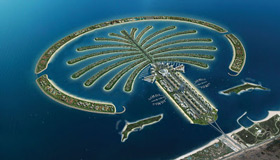
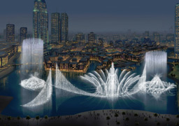
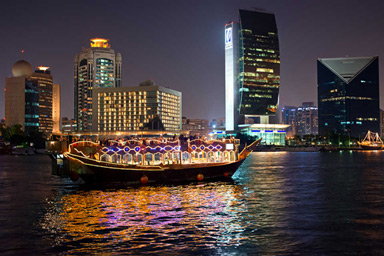
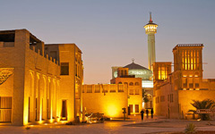

Es una atracció molt coneguda a Dubai. Esta formada per un conjunt de illes artificials en forma de palmera, compost de un tronc, 17 rames i un semicercle. Per poder gaudir de aquesta obra maestra lo millor que hi ha es mirar-lo des de las altures.
Es molt similar a la font que hi ha a Las Vegas ( Les Fonts de Bellagio), no es una casualitat, la font de Dubai va ser dissenyada per el mateix enginyer. La diferencia es el lloc, i les dimensions. La font es troba al costat de Burj Khalifa i també es pot veure en la terrassa de Dubai Mall.
Dubai Creek es el riu natural que s’endinsa aproximadament 10 quilòmetres. Aquest riu separa Dubai en Deira i Bur Dubai, els dos barris més antics de la ciutat.
Esta al Sur de Dubai Creek, Bastakiya es una de les zones més antigàs de Dubai, on es gaudeix de l’atmosfera tradicional emirati. Si vols donar un passeig per Bastakiya, veuràs cases antigues amb patis interiors i un sistema de captació de vent, per canalitzar l’aire que entre a les cases.